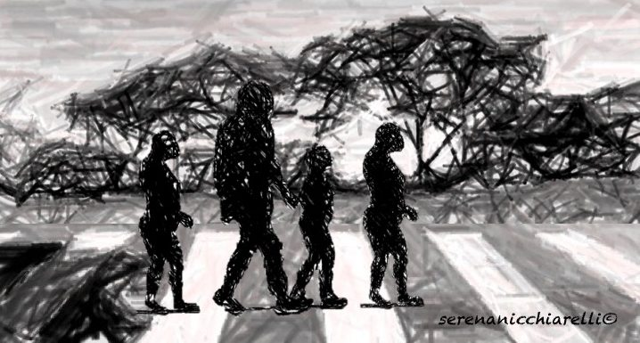

Conference series

The Protolang conference series creates an interdisciplinary platform for scholarly discussion on the origins of symbolic communication distinctive of human beings.
The thematic focus of Protolang is on delineating the genetic, anatomical, neuro-cognitive, socio-cultural, semiotic, symbolic and ecological requirements for evolving (proto)language. Sign use, tools, cooperative breeding, pointing, vocalisation, intersubjectivity, bodily mimesis, planning and navigation are among many examples of such possible factors through which hominins have gained a degree of specificity that is not found in other forms of animal communication and cognition.
We aim at identifying the proximate and ultimate causes as well as the mechanisms by which these requirements evolved; evaluating the methodologies, research tools and simulation techniques; and enabling extended and vigorous exchange of ideas across disciplinary borders.
We invite scholars from A(rcheology) to Z(oology), and all disciplines in between, to contribute data, experimental and theoretical research, and look forward to welcoming you at one of our conferences!